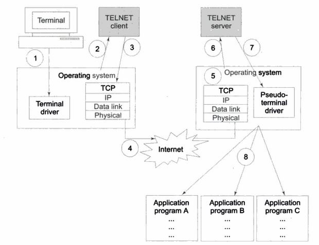
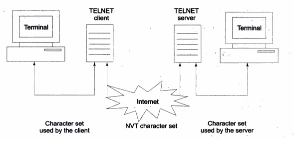

Q. 4: What is Telnet? How does it provide remote login?
Ans : Remote Login and TELNET
In contrast to local login, sometimes a user wants to access an application program located on a remote computer. For this, the user logs on to the remote computer in a process known as remote login. A user specifies the domain name or IP address to select a remote server with which it wants to establish a TELNET session. This is where TELNET comes into picture. TELNET stands for TErminaL NETwork. This is shown in Figure. The step numbers shown in the figure followed by their descriptions depict how TELNET works in detail.

1. As usual, the commands and characters typed by the user are sent to the operating system on the common server computer. However, unlike a local login set up, the operating system now does not interpret the commands and characters entered by the user.
2. Instead, the local operating system sends these commands and characters to a TELNET client program, which is located on the same local computer.
3. The TELNET client transforms the characters entered by the user to a universally agreed format known as Network Virtual Terminal (NVT) characters and sends them to the TCP/IP protocol stack of the server computer. TELNET was designed to work between any host (i.e. any operating system) and any terminal. NVT is an imaginary device, which is the commonality between the client and the server. Thus, the client operating system maps whatever terminal type the user is using to NVT. At the other end, the server operating system maps NVT on to whatever actual terminal type the server is using. This concept is illustrated in Figure.

4. The commands or text in the NVT format then travel from the server computer to the TCP/IP stack of the server via the Internet infrastructure. That is. the commands or text are first broken into TCP and then IP packets, and are sent across the physical medium from the local client computer to the server. This works exactly similar to the way IP packets (and then physical hardware frames) travel over the Internet, as described previously.
5. At the server computer's end, the TCP/IP software collects all the IP packets, verifies their correctness/completeness, and reconstructs the original command so that it can hand over these commands or text to that computer's operating system.
6. The operating system of the server computer hands over these commands or text to the TELNET server program, which is executing on that remote computer, passively waiting for requests from TELNET clients.
7. The TELNET server program on the remote server computer then transforms the commands or text from the NVT format to the format understood by the remote computer. However, the TELNET server cannot directly hand over the commands or text to the operating system, because the operating system is designed so that it can accept characters only from a terminal driver: not from a TELNET server. To solve this problem, a software program known as pseudo-terminal driver is added, which pretends that the characters are coming from a terminal and not from a TELNET server. The TELNET server hands over the commands or text to this pseudo-terminal driver.
8. The pseudo-terminal driver program then hands over the commands or text to the operating system of the remote computer, which then invokes the appropriate application program on the remote server.
The client using the terminal on the other side, can, thus, access this remote computer as if it were a local server computer!